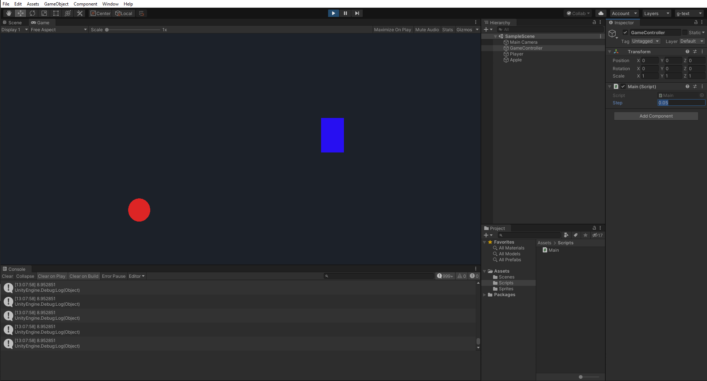

Intro to real-time systems
A first look at dataflow languages and game engines: how to approach them and what their strengths are.
Interactive programming . Max & Pd . Unity
Interactive programming
The Wikipedia article provides a good working definition for interactive programming: “the procedure of writing parts of a program while it is already active.”Not to be confused with live coding, which is a subset of interactive programming where on-the-fly coding is itself a focal point in a performative act. We discuss the topic more in depth in a [later class].
The implications will become obvious in time, but it is important to note them from the start: learning a visual, dataflowApparently “dataflow” is a dirty word in some hardcore reactive programming circles, and a more accurate term would be “flow-based”. See this discussion. language such as Max, Pure Data, or TouchDesigner (and to an extent a game engine such as Unity), is not just an continuation of the traditional programming path which we covered in the previous module. This may boil down to the representation of two aspects: program state and data flow.
The state of a program represents everything it “knows”This includes variable values and execution trace. at a certain point in time. In traditional, imperative programming languages, the program state is explicitly determined by the sequence of operations specified in the code.
We have already seen how easily state can be obscured through an interactive programming environment like Jupyter notebooks:
What is the value of a at the end of this execution chain?
[1] a = 2
[4] a *= 3
[3] a /= 2
In a dataflow language, the state of the program results from the flow of data through an architecture of routes“patch cords” in Max/Pd, “wires” in TD. connecting nodes,“objects” in Max/Pd, “operators” in TD. which can be represented as a graph.
To sum up, we might compare imperative and dataflow languages as follows:
Table 1: state and flow in traditional vs graphical programming
| imperative | dataflow | |
|---|---|---|
| (Java, JS, Python, C#) | (Max, Pd, TD, vvvv) | |
| state | primary | secondary |
| flow | secondary | primary |
In Max et al, the state is subordinated to the flow of data,You can of course peek at current values at any point in the graph. while in Processing et al, the program flow is determined by the specified sequence of operations and their in-out dependencies.The flow of data can be followed by running a debug trace.
Max & Pd
Max was created by Miller Puckette in the 80s at IRCAM, to facilitate the composition and programming of complex digital synthesizers via an interactive and modular interface.More information on Puckette`s history and motivation for Max and Pure Data can be heard in an excellent interview on the Art+Music+Technology podcast. In the 90s he spun off Pure Data as a free, open-source, and relatively lightweight alternative to Max, which continued to be developed by David Zicarelli’s new company, Cycling ‘74.
The mid-90s brought real-time signal processing capabilities to consumer computers, which were incorporated into both Max (which became known as Max/MSP) and Pure Data. In 2003, Cycling ‘74 released Jitter, which added matrix manipulation for video and 3D graphics to Max. Another milestone was Max for Live and the subsequent merger of Cycling ‘74 with Ableton in the 2010s. This, as well as other integrations such as JavaScript, Node for Max, and a vast array of external contributions, has maintained Max as a main choice for real-time creative computing for decades now.
Meanwhile, Pd has also continued to evolve as a community-based project, mirroring many of Max’s capabilities and being embedded (via libpd) into pretty much any platform that will support it, including Raspberry Pi, Unity, and even Max itself.
Max and Pd both deal with data of different types (symbols, numbers, audio buffers, matrices etc) flowing through objects,Hundreds of objects come built in, and can be supplemented by external packages. The Max documentation has several ways of presenting them; an underused one is the object thesaurus. which have accompanying help patches. These are small programs demonstrating the functionality and common use cases of a certain object, and can be taken apart and reused.
Here’s how you might add two numbers together:

Left: Max. Middle: Pd vanilla.
Right: Purr Data, a community-driven, extended fork of Pd which includes a modernised frontend.
The Max interface (left) has probably the best look and feel, but the usage of the [+] object is the exact same: at least for core components, the transition from Max to Pd and vice versa is trivial.
Unity
Primarily a game engine, Unity is today a significant tool in the digital arts, mainly due to its state-of-the-art 3D graphics and scripting features, and to its adoption of technologies such as current VR, AR, mobile and web platforms. Meanwhile, it’s just as potent for basic 2D interactive apps, which is how we’ll begin our approach, transitioning [from Processing to Unity].
Unity exposes C# as its scripting API language. This means you write code in C# (an imperative language just like Java et al), and then the corresponding architecture is compiled in the back-end for you before the app is able to run. So far this sounds more like the workflow in Processing, than the interpreted graphical tools we described above.

The Unity editor in play mode. Users are able to change parameter values and test their impact on the interaction dynamics in real time.
Interactive development in Unity is enabled through altering program parameters during runtime. This tightens the build-test loop, letting you iterate through various changes much faster. As you progress, you might find yourself speeding up development even more by creating your own custom editors, integrated into the Unity UI in edit and/or play mode.
Unity comes with an extensive learning platform and documentation. See the resources page for more links to lessons and tutorials.
As with Max, there are free / open-source alternatives to the big industry players, Unity and Unreal Engine. I encourage you to check out Godot, a free and open source game engine which also has the ability to deploy to web, mobile and XR. Or, if you liked [P5] and are looking for an integrated platform to make small games and prototypes, you can’t go wrong with [PICO-8].